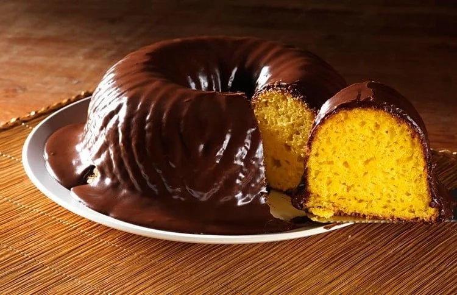

COMO FAZER BOLO DE CENOURA COM COBERTURA DE CHOCOLATE ?
-
No liquidificador colocar os ovos, o óleo e as cenouras. bater por 3 minutos para sumir o cheiro dos ovos.
Em uma vasilha a parte colocar os secos.
Misturar os dois, mexer bem.
Levar ao microondas por 10 minutos( em forma apropriada) enquanto isso fazer a calda.
é so levar tudo ao fogo e mexer sempre até que engrosse.
se preferir leve ao microondas, mas sempre parando para mexer porque ela cai e pode queimar.
Colocar em cima do bolo ainda quente.
Se o bolo for feito na forma de silicone ele sai super fácil passando um pouco de óleo na forma e não quebra.
Dicas:
Ferva o leite com o achocolatado até obter ponto de calda.
